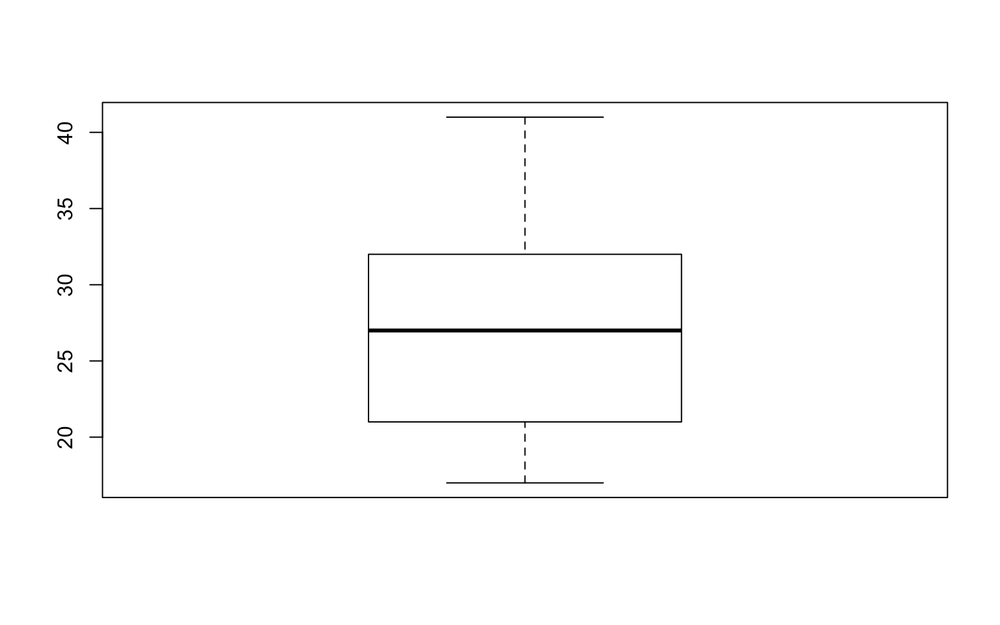
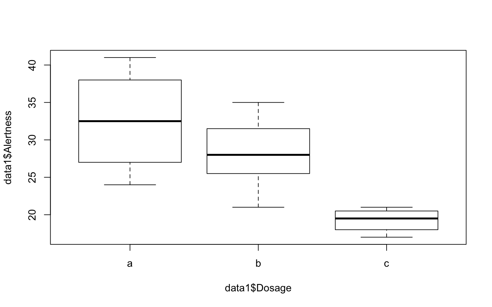
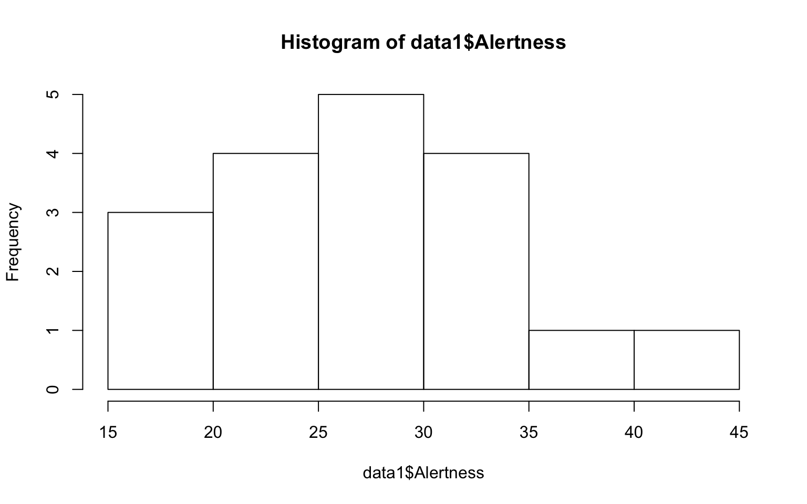
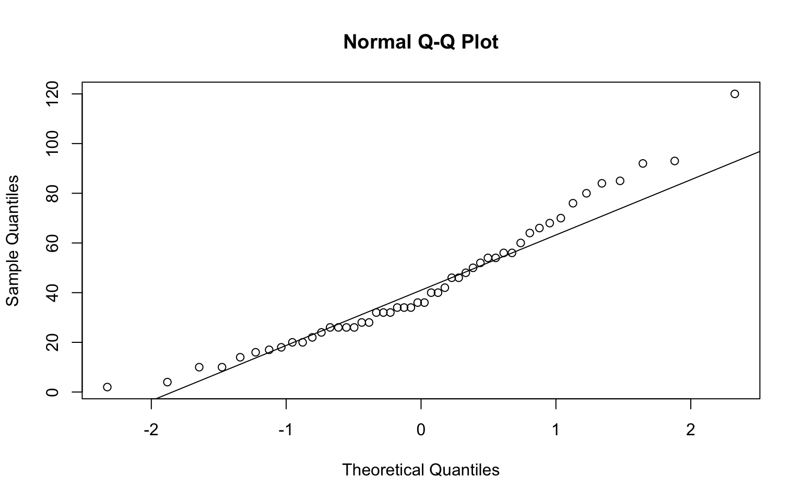
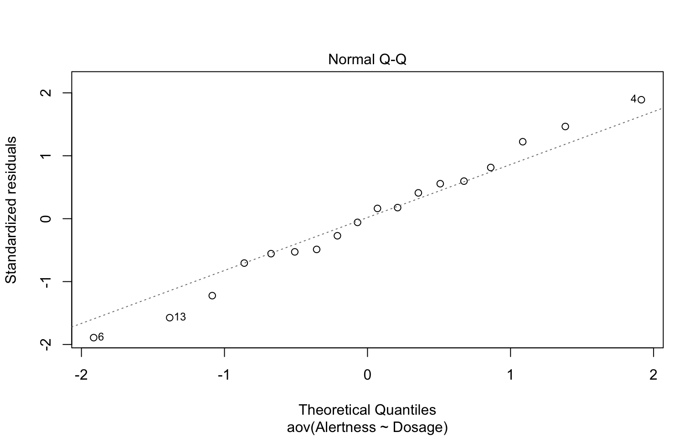
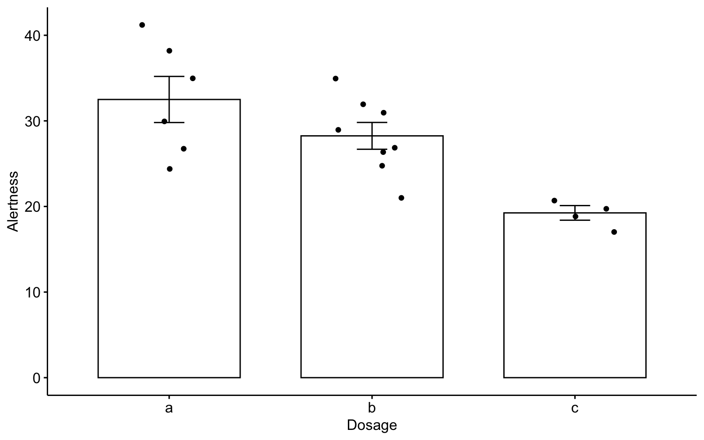

HD 5514 Research Methods (Fall 2019)
Analysis of Variance (W15)
HD 5514 Research Methods (Fall 2019)
- In-Class Acitivity: Analysis of Variance (ANOVA)
- Load Data
- Check Data Set
- Visualize your data - Boxplot & Histogram
- Conduct one-way Anova
- Report means
- Check ANOVA assumptions
- Check the homogeneity of variance assumption: Levene’s test
- ANOVA test with no assumption of equal variances: Welch one-way test
- Check the normality assumption
- Non-parametric alternative to one-way ANOVA test: Kruskal-Wallis rank sum test
- In-Class Acitivity: Multiple pairwise-comparison
- In-Class Acitivity: Planned Constrasts
- FYI: Visualize your data using ggpubr
- In-Class Acitivity: Tidyverse
- Assignment 10 (Week 15)
In-Class Acitivity: Analysis of Variance (ANOVA)
Load Data
We are going to use R.appendix1.data from Personality Project. We will load and print the data.
# 1. Loading
data1 <- read.table("http://personality-project.org/r/datasets/R.appendix1.text",
header = TRUE) #read the data into a table
data1 Dosage Alertness
1 a 30
2 a 38
3 a 35
4 a 41
5 a 27
6 a 24
7 b 32
8 b 26
9 b 31
10 b 29
11 b 27
12 b 35
13 b 21
14 b 25
15 c 17
16 c 21
17 c 20
18 c 19 Dosage Alertness
1 a 30
2 a 38
3 a 35
4 a 41
5 a 27
6 a 24Check Data Set
Check the number of rows and columns.
[1] 18 2'data.frame': 18 obs. of 2 variables:
$ Dosage : Factor w/ 3 levels "a","b","c": 1 1 1 1 1 1 2 2 2 2 ...
$ Alertness: int 30 38 35 41 27 24 32 26 31 29 ...[1] "a" "b" "c"Visualize your data - Boxplot & Histogram
# par(mar=c(1,1,1,1)) # change figure margins if you encounter error
# Boxplot
boxplot(data1$Alertness)


Conduct one-way Anova
# Compute the analysis of variance
aov.ex1 <- aov(Alertness ~ Dosage, data = data1)
# Summary of the analysis
summary(aov.ex1) Df Sum Sq Mean Sq F value Pr(>F)
Dosage 2 426.2 213.12 8.789 0.00298 **
Residuals 15 363.8 24.25
---
Signif. codes: 0 '***' 0.001 '**' 0.01 '*' 0.05 '.' 0.1 ' ' 1Report means
model.tables computes summary tables for model fits, especially aov fits.
Tables of means
Grand mean
27.66667
Dosage
a b c
32.5 28.25 19.25
rep 6.0 8.00 4.00Check ANOVA assumptions
ANOVA assumes normal distribution and homogeneity of variances.
Check the homogeneity of variance assumption: Levene’s test
Perform Leven’s test using the function leveneTest in car package. If variance across groups is not significantly different, we can assume the homogeneity of variances in the different groups.
Levene's Test for Homogeneity of Variance (center = median)
Df F value Pr(>F)
group 2 4.1667 0.03638 *
15
---
Signif. codes: 0 '***' 0.001 '**' 0.01 '*' 0.05 '.' 0.1 ' ' 1ANOVA test with no assumption of equal variances: Welch one-way test
Welch one-way test is an alternative that does not require thae homogeneity of variance assumption.
One-way analysis of means (not assuming equal variances)
data: Alertness and Dosage
F = 19.339, num df = 2.0000, denom df = 9.2651, p-value =
0.0004931Check the normality assumption
We can assume normality if all the points fall approximately along this reference line. Or you can conduct Shapiro-Wilk test on ANOVA residuals.
# create a normal QQ plot and add a reference line (Run the two lines at the
# same time)
qqnorm(cars$dist)
qqline(cars$dist)

Shapiro-Wilk normality test
data: residuals(aov.ex1)
W = 0.98604, p-value = 0.991Non-parametric alternative to one-way ANOVA test: Kruskal-Wallis rank sum test
When ANOVA assumptions are not met, you cna use a non-parametric alternative.
Kruskal-Wallis rank sum test
data: Alertness by Dosage
Kruskal-Wallis chi-squared = 9.4272, df = 2, p-value = 0.008972In-Class Acitivity: Multiple pairwise-comparison
Bonferroni and Holm multiple pairwise-comparisons
In one-way Anova, a siginificant p-value means some of the group means are different. However, this does not tell us which pairs of groups are different. We can perform multiple pairwise-comparison to test the statistically significant mean difference between particular pairs of group. Given the significant ANOVA test, we can compute adjusted p-values using pairwise.t.test.
Pairwise comparisons using t tests with pooled SD
data: data1$Alertness and data1$Dosage
a b
b 0.13088 -
c 0.00082 0.00926
P value adjustment method: none
Pairwise comparisons using t tests with pooled SD
data: data1$Alertness and data1$Dosage
a b
b 0.3926 -
c 0.0025 0.0278
P value adjustment method: bonferroni
Pairwise comparisons using t tests with pooled SD
data: data1$Alertness and data1$Dosage
a b
b 0.1309 -
c 0.0025 0.0185
P value adjustment method: holm Tukey multiple pairwise-comparisons
Tukey HSD (Tukey Honest Significant Differences) using TukeyHD.
# diff: difference between means of the two groups lwr, upr: the lower and
# the upper end point of the confidence interval at 95% (default) p adj:
# p-value after adjustment for the multiple comparisons.
TukeyHSD(aov.ex1) Tukey multiple comparisons of means
95% family-wise confidence level
Fit: aov(formula = Alertness ~ Dosage, data = data1)
$Dosage
diff lwr upr p adj
b-a -4.25 -11.15796 2.657961 0.2768132
c-a -13.25 -21.50659 -4.993408 0.0022342
c-b -9.00 -16.83289 -1.167109 0.0237003In-Class Acitivity: Planned Constrasts
You can test some specific hypotheses than testing all possible mean comparisons. We can combine multiple means from different levels and compare two means (e.g., a and b vs. c)
# assign values to the groups that you want to compare
c1 <- c(0.5, -0.5, 0) # H0_c1: a = b
c2 <- c(0.5, 0.5, -1) # H0_c2: a & b = c
# assign the contrasts
data1$c1 <- c(rep(0.5, 6), rep(-0.5, 8), rep(0, 4))
data1$c2 <- c(rep(0.5, 6), rep(0.5, 8), rep(-1, 4))
# compare differences between pairs of means (using regression)
anova(lm(Alertness ~ c1 + c2, data = data1))Analysis of Variance Table
Response: Alertness
Df Sum Sq Mean Sq F value Pr(>F)
c1 1 42.98 42.98 1.7722 0.202990
c2 1 383.27 383.27 15.8051 0.001218 **
Residuals 15 363.75 24.25
---
Signif. codes: 0 '***' 0.001 '**' 0.01 '*' 0.05 '.' 0.1 ' ' 1FYI: Visualize your data using ggpubr
Bar plots with mean +/- se with jittered points
# Install R package ggpubr
## Recommended: Install the latest developmental version from GitHub (remove
## # below) if(!require(devtools)) install.packages('devtools')
## devtools::install_github('kassambara/ggpubr')
## If that failed, try one from CRAN (Remove # below)
## install.packages('ggpubr') install.packages('ggplot2')
# Load ggpubr
library(ggpubr)
library(ggplot2)
ggbarplot(data1, x = "Dosage", y = "Alertness", add = c("mean_se", "jitter"))
In-Class Acitivity: Tidyverse
tidyverse is an opinionated collection of R packages designed for data science. https://www.tidyverse.org/ This is designed to make it easy to install and load core packages from the tidyverse. magrittr offers a set of operators which make your code more readable such as the pipe operator %>% https://magrittr.tidyverse.org/ dplyr provides a set of tools for efficiently manipulating datasets: https://dplyr.tidyverse.org/.
# The easiest way to get dplyr or magrittr is to install the whole
# tidyverse: install.packages('tidyverse')
# Alternatively, install just dplyr or magritter: install.packages('dplyr')
# install.packages('magrittr')
library(magrittr)
library(dplyr)
library(tidyverse)Computes summary tables using dplyr
data1 %>% group_by(Dosage) %>% summarise(count = n(), mean = mean(Alertness,
na.rm = TRUE), sd = sd(Alertness, na.rm = TRUE))# A tibble: 3 x 4
Dosage count mean sd
<fct> <int> <dbl> <dbl>
1 a 6 32.5 6.60
2 b 8 28.2 4.43
3 c 4 19.2 1.71Assignment 10 (Week 15)
Read Data
We will use build-in data set Prestige contained in the R package car. We will load and print the survey data.
# 1. Load the required package. install.packages('car') # if you don't have
# the 'car' package, make sure to install it.
library(car)
# 2. Load the data
data(Prestige)
# 2. Print
head(Prestige) education income women prestige census type
gov.administrators 13.11 12351 11.16 68.8 1113 prof
general.managers 12.26 25879 4.02 69.1 1130 prof
accountants 12.77 9271 15.70 63.4 1171 prof
purchasing.officers 11.42 8865 9.11 56.8 1175 prof
chemists 14.62 8403 11.68 73.5 2111 prof
physicists 15.64 11030 5.13 77.6 2113 profCheck Data
Check the number of rows and columns.
'data.frame': 102 obs. of 6 variables:
$ education: num 13.1 12.3 12.8 11.4 14.6 ...
$ income : int 12351 25879 9271 8865 8403 11030 8258 14163 11377 11023 ...
$ women : num 11.16 4.02 15.7 9.11 11.68 ...
$ prestige : num 68.8 69.1 63.4 56.8 73.5 77.6 72.6 78.1 73.1 68.8 ...
$ census : int 1113 1130 1171 1175 2111 2113 2133 2141 2143 2153 ...
$ type : Factor w/ 3 levels "bc","prof","wc": 2 2 2 2 2 2 2 2 2 2 ...[1] 102 6Use the help function to learn about variables
If you want to learn more about the t.test function.